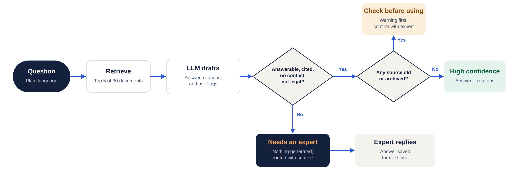
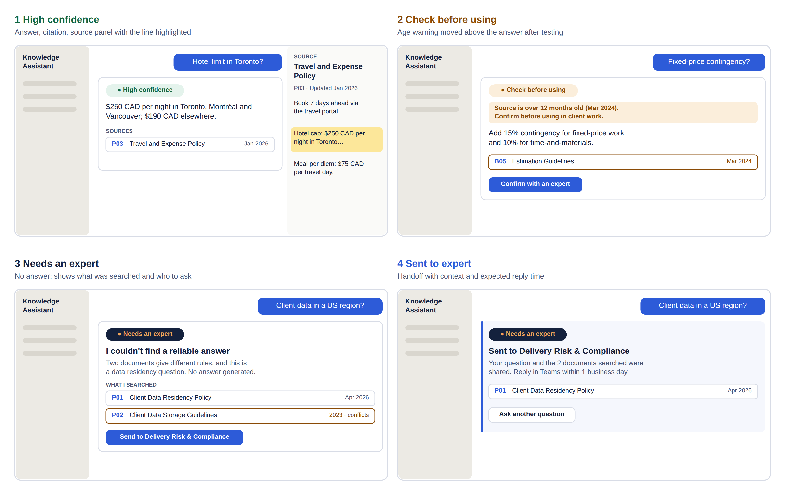

Consultants spent about 25 minutes finding one internal answer and often ended up interrupting a senior colleague. I defined, designed and built a retrieval-augmented assistant that answers from approved documents, shows its sources, and routes risky questions to people.
5 interviews, personas, journey map
PRD, confidence tiers, 30-doc corpus, 25-question test set
Gemini File Search pipeline and tier rules
Figma flows, wireframes, components, live prototype
AI evaluation, 3 usability sessions, ROI model
Answers are spread across SharePoint, Confluence, policy PDFs and people's heads. Old and current versions sit side by side, so people can't tell what's authoritative and fall back on messaging a senior colleague.
Searching: 40+ hits, old and current versions mixed
Verifying: no way to tell which document is authoritative
Waiting on an expert: managers field 5–6 questions a day
Senior consultant, Toronto banking account
"Which version of this template is the current one?"
Runs 4 projects across Ontario and Québec
"What did we commit to on data residency for this client?"
Composite interviews built from delivery experience: 3 consultants and 2 delivery managers, 30 minutes each, each walking through their most recent real lookup step by step.
| Stage | Doing | Pain point | Opportunity |
|---|---|---|---|
| Search ~8 min | Keyword search across SharePoint and Confluence | 40+ hits; old and current versions mixed | Ask in plain language, get one answer |
| Verify ~7 min | Open and skim 3–5 documents | No way to tell which is authoritative | Show source, date and confidence |
| Ask ~10 min | Message a senior colleague on Teams | Answer isn't recorded anywhere | Escalate only when unsure, with context |
| Use | Paste the answer into client work | No citation kept | Log every answer with its sources |
All 5 named a source link, a date, or "I don't know" as the condition for trusting a tool.
4 of 5 regularly end a lookup by asking a colleague. One manager fields 5–6 such questions a day.
Consultants want short answers. Managers won't accept a guess on anything contractual.
The confidence tier isn't the model's opinion of itself, which tends to be overconfident. It comes from things we can check: how old the source is, whether it's archived, whether sources agree, and whether the question is legal.


| Usability finding (3 sessions) | Change |
|---|---|
| 1 of 3 participants skipped the age warning and used an outdated figure | Moved the warning above the answer and named the source date |
| "Low confidence" read as "the tool is broken" | Renamed the state to "Needs an expert" and led with what happens next |
| All 3 found the highlighted source line unaided; the handoff built trust for compliance questions | Kept as designed |
Task completion: 8 of 9. Average time to a verified answer: 43 seconds.
The demo walks through all three trust paths: a cited answer from a current policy, a warning on an outdated source, and an escalation when documents conflict.
Start with the suggested questions: one for each path. Click any source to open the document with the supporting line highlighted, and open "Why this rating?" to see the reasoning.
Open full screen → The hosted version runs entirely in the browser on a 30-document sample knowledge base, with no API key needed.
flowchart LR D[(30 documents + metadata: status, last updated)] --> FS[Gemini File Search store] U([User question]) --> FS FS --> LLM[Gemini: answer + citations + flags as JSON] LLM --> T[score_tier rules in Python] T --> UI[Chat UI: tier badge, sources, escalation] T --> LOG[(Audit log: query, sources, tier)]
Gemini File Search handles chunking, embeddings and citations. Each document carries its status and last-updated date as metadata, returned with every citation.
The model answers only from retrieved text and returns structured JSON: answer, answerable, sources conflict, legal or regulatory, and a reason.
About 20 lines of code turn those signals into a tier. A compliance reviewer can read and audit them, unlike a model's self-reported confidence.
def score_tier(result, citations):
if not result["answerable"]: return "Low", "No reliable answer"
if result["sources_conflict"]: return "Low", "Sources disagree"
if result["legal_or_regulatory"]: return "Low", "Expert must confirm"
if not citations: return "Low", "Uncited answer withheld"
if any(archived_or_stale(c) for c in citations):
return "Medium", "Old or archived source"
return "High", "Current sources"
Method: discovery → PRD with acceptance criteria → test set written before building → pipeline → design → evaluate → iterate. Tools: Gemini API, Langflow (visual pipeline), Figma and FigJam, Python. Pipeline code →
The test set mixes 15 answerable questions, 5 that only an outdated source answers, and 5 with no safe answer (two of them hit conflicting documents). Below are measured results for the keyword-retrieval baseline, against the targets the LLM pipeline must hit.
Bars: measured baseline. Black marks: target. Retrieval 22/22, citations 18/20, tiers 21/25, escalations 3/3 correct but only 3 of 5 caught.
The baseline answered two questions it should have escalated (a billing rate and meeting-room booking) by matching loosely related lines. Confident wrong answers are the most damaging failure for trust. That's the case for an LLM step that can judge whether the text actually answers the question.
Answer relevance ≥ 85% · hallucination ≤ 3% of claims · citation accuracy ≥ 95% · escalation precision ≥ 90% and recall 100% · time to answer −40%. Scored by hand with run_eval.py and the scorecard workbook.
| Low | Base | High | |
|---|---|---|---|
| Users | 100 | 200 | 400 |
| Hard lookups per user per day | 1 | 2 | 3 |
| Minutes saved per lookup | 5 | 10 | 12 |
| Expert interruptions avoided (per manager per day) | 1 × 10 managers | 3 × 20 managers | 4 × 40 managers |
| Hours saved per year | 2,200 | 16,900 | 58,700 |
| Annual value (CAD) | $196K | $1.49M | $5.13M |
| Year-1 return on $245K cost | −20% (payback ~15 months) | 5.1× (payback ~2 months) | 20× (under 1 month) |
Assumptions: 220 working days; blended internal cost $85/h for consultants and $110/h for managers; each avoided interruption saves 10 manager-minutes. Year-1 cost of $245K covers build, content operations and API usage (Gemini costs are under 2% of it). The low case shows adoption is the real risk, which is why the pilot measures usage before scaling.
Planting outdated and conflicting documents up front made "trust" measurable before any UI existed.
The handoff, not the answer quality, was what made the manager persona willing to use it for compliance questions.
Rules on source age and agreement are explainable, testable and easy to change when policy changes.